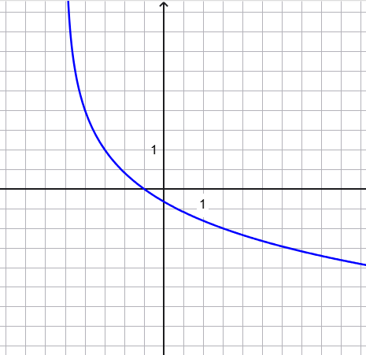

Scrivere la funzione logaritmica rappresentata dal seguente grafico

Soluzione \(\,\,\,f(x) = log_{\frac{1}{2}}(x + \dfrac{5}{2}) + 1\)
Consideriamo la funzione \(f(x) = e^{2x - 1} - x\).
-
Scrivere la legge della funzione \(g\) il cui grafico è dilatato orizzontalmente di un fattore \(2\) rispetto
al grafico della funzione \(f\).
-
Scrivere la legge della funzione \(h\) il cui grafico è traslato orizzontalmente di \(1\) unità verso destra rispetto
al grafico della funzione \(g\).
Soluzione
Si ha
\[
g(x) = e^{x - 1} - \dfrac{x}{2} \qquad h(x) = e^{x - 2} + \dfrac{1 - x}{2}
\]
Risolvere la seguente equazione logaritmica.
\[
\log(x^2 - 3x + 10) = \log(x - 2) + \log(2x)
\]
Soluzione
La soluzione dell'equazione è \(x = \dfrac{1 + \sqrt{41}}{2}\).